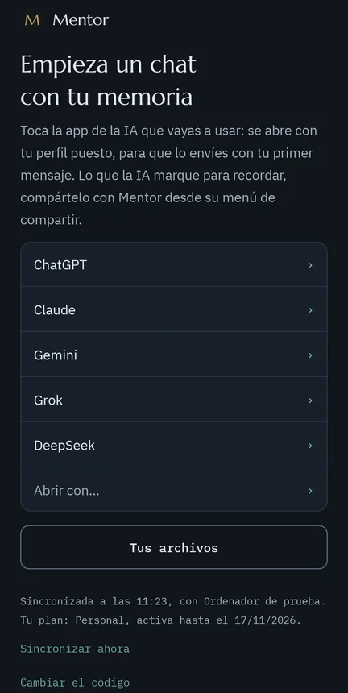
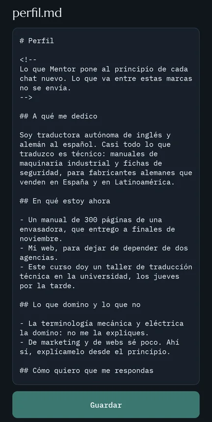

Una memoria para ChatGPT, Claude, Gemini, Grok y DeepSeek
Tu memoria para la IA. Tuya, no de la IA.
Lo que una IA aprende de ti, lo saben todas.
Una carpeta de archivos en tu ordenador que ChatGPT, Claude, Gemini, Grok y DeepSeek leen al empezar cada chat, y en la que apuntan lo que aprenden de ti. La misma memoria en todas, y en tus programas de IA.
Empieza tu prueba de 14 días. Si te das de baja antes de que acabe, no se cobra nada.
Estás en un teléfono: Mentor se instala en tu ordenador, con Windows o Mac, y el teléfono se une después. Abre esta página en tu ordenador.
- Cifrada en tu dispositivo
- Archivos de texto tuyos
- Todo en la Unión Europea
Díselo una vez.
Mentor lo apunta en tu carpeta, y lo saben todas.
Claude
«Los glosarios, siempre en dos columnas: término y fuente.»
✓ Mentor ha apuntado
ChatGPT, al día siguiente
Glosario del capítulo 9, en dos columnas: término y fuente.
Lo apuntado, al empezar
Funciona dentro de las IA que ya usas
- ChatGPT
- Claude
- Gemini
- Grok
- DeepSeek
- Claude Code
- Codex
- Cursor
- Claude Desktop
- Cowork
El problema
Cada IA te conoce a medias.
Cada una tiene su propia memoria, que vive en su servidor y solo sirve dentro de ella. Lo que le cuentas a una, la otra no lo sabe.
- 1Le explicas a una IA cómo trabajas
- 2Al día siguiente, en otra, se lo vuelves a explicar
- 3Lo que le corregiste a la primera se queda en ella
Mentor hace que lo sepan todas, desde una carpeta que es tuya.
Una memoria, todas tus IAs
Corriges a Claude. ChatGPT empieza sabiéndolo.
Tú
Los glosarios, siempre en una tabla de dos columnas: término y fuente. La definición ya la sé, lo que no recuerdo es dónde lo vi.
Claude
Entendido: desde ahora, en dos columnas, término y fuente, sin definiciones.
Tú
Esto lo añade Mentor, la memoria que llevo de un chat a otro. Debajo va mi perfil…
Lo que Mentor ha apuntado de mí: Los glosarios, en una tabla de dos columnas, término y fuente, sin definiciones.
Hazme el glosario del capítulo 9.
ChatGPT
| Término | Fuente |
|---|---|
| parada de emergencia | Manual de la envasadora, cap. 9 |
| cubierta de protección | Ficha de seguridad, apartado 7 |
Ejemplo con la memoria de Inés, una traductora técnica inventada para el ejemplo. Las tarjetas y los textos de Mentor son los de verdad.
Para tu trabajo
Tu trabajo, sin volver a explicarlo.
Elige el tuyo. La IA es la misma, pero ya sabe cómo trabajas, para quién y cómo lo quieres.
Traducción técnica
Tu idioma, tu tono y tus manías con los términos, en cada encargo.
✕ Sin memoria
«Traduce este apartado del alemán. Es para un fabricante de envasadoras, en español de España y de tú. No me expliques la terminología, y si dudas de un término, dame las dos opciones y dónde has visto cada una…»
✓ Con Mentor
- Traductora técnica, del alemán y del inglés
- Español de España, de tú
- Dos opciones si duda
- Glosarios en dos columnas
«Traduce este apartado.»
Asesoría con clientes
Una memoria por cliente: en el chat de uno no entra nada de otro.
✕ Sin memoria
«Prepara el correo del trimestre para el taller. Recuerda que es una SL de doce personas, que el gerente lo quiere todo por escrito y que este trimestre cambian de banco…»
✓ Con Mentor
- Cliente: taller
- SL de doce personas
- Todo por escrito
- Cambian de banco este trimestre
«Prepara el correo del trimestre.»
Programar con IA
Claude Code, Codex y Cursor leen la misma memoria que las webs.
✕ Sin memoria
«Monta el proyecto en Go, sin dependencias de fuera. Las pruebas, al lado de cada archivo, y los mensajes de commit en castellano y en presente…»
✓ Con Mentor
- Go, sin dependencias de fuera
- Pruebas junto a cada archivo
- Commits en castellano
«Monta el proyecto.»
Escribir para una marca
Tu voz, la misma en cada IA que uses para escribir.
✕ Sin memoria
«Escribe el boletín de noviembre. Tono cercano pero sin exclamaciones, frases cortas, nada de «sinergias», y firmo como Lucía, del equipo de la tienda…»
✓ Con Mentor
- Cercano, sin exclamaciones
- Frases cortas
- Nada de «sinergias»
- Firma: Lucía
«Escribe el boletín de noviembre.»
Ejemplos inventados, para enseñar cómo funciona.
Cómo funciona
Se escribe sola. La revisas tú.
Instalas la app y escribes tu perfil con una entrevista corta, en la IA que uses: quién eres cuando trabajas, en unas 300 palabras. Desde ahí, Mentor trabaja en cada chat.
Apunta
Guarda lo que importa, sin que lo copies tú
Cuando corriges a la IA o le dices cómo lo quieres, lo marca en su respuesta y Mentor lo apunta en tu carpeta, con la fecha y tu frase. Si no te vale, «Deshacer».
Ordena
Una revisión por semana, y decides tú
Mentor repasa contigo lo apuntado y sube a tu perfil lo que ha aguantado. Lo que la IA deduce, y no le has dicho, lleva ⚠️ hasta que lo confirmas.
Busca
Contesta desde tu carpeta
Si la IA necesita algo que no está en tu perfil, se lo pide a Mentor, que lo busca en tu carpeta y lo pone en la caja, a la vista, antes de que lo envíes.
aprendizajes.md:
- 2026-10-02 · Descarta las herramientas de traducción en la nube para los manuales…
Explícaselo una vez, y para todas.
La prueba dura 14 días, con todo. Hoy no se cobra nada.
¿Programas con IA? Claude Code, Codex y Cursor usan la misma memoria.
La pregunta de siempre
¿Y la memoria que ya tienen ChatGPT o Claude?
Sirve, dentro de cada una. Pero cada IA guarda su parte de ti en su servidor, y lo que sabe una no lo sabe la otra. Mentor va aparte, en una carpeta tuya, y la leen todas.
| La memoria de cada IA | Mentor | |
|---|---|---|
| Dónde vive | En el servidor de esa IA | En tu ordenador, en archivos de texto |
| Dónde sirve | Dentro de esa IA | En ChatGPT, Claude, Gemini, Grok, DeepSeek y tus programas de IA |
| Cómo la ves | En los ajustes de cada una | Entera, con cualquier editor |
| Si cambias de IA | La copias a mano, y desde ahí son dos | Es la misma en todas, cada día |
Tuya de verdad
Tu memoria es tuya.
No es una frase. Son cuatro cosas que Mentor cumple, y que puedes comprobar.
Nadie más tiene la llave, ni Radamant
Lo que se sincroniza se cifra en tu dispositivo, con una llave que nace allí y no sale. El almacén guarda bytes que no puede leer.
Son archivos de texto
Markdown, que abres con el Bloc de notas, con Obsidian o con cualquier editor, y que lee cualquier IA. Sin base de datos y sin formato propio.
La guardas donde quieras
En el almacén de Radamant, en la Unión Europea; en una carpeta del cloud que ya usas; o en ningún sitio, solo en tu ordenador. El formato está publicado.
Si te vas, te la llevas entera
Exportar es la carpeta misma. Si dejas Mentor, o si Radamant cerrara, cada uno de tus dispositivos tiene tu memoria completa.
Todo lo que hace
Todo Mentor, de un vistazo.
En tus chats
- Tu perfil al empezar cada chat, a la vista
- Lo que aprende, con su fecha y tu frase
- «Deshacer» en cada apunte
- La búsqueda en tu carpeta, cuando la IA la pide
- La revisión semanal
- Una memoria por cliente Profesional
Tu carpeta
- Archivos markdown, con cualquier editor
- Tu perfil, quién eres y lo apuntado, por separado
- Nada se pierde si dos dispositivos chocan
- Versiones guardadas 12 meses
- Versiones sin límite Profesional
En todas partes
- ChatGPT, Claude, Gemini, Grok y DeepSeek
- Chrome, Edge, Brave, Opera y Vivaldi
- Claude Code, Codex, Cursor, Claude Desktop y Cowork
- Un modelo en tu ordenador, sin red
- Android, en pruebas
Tus dispositivos
- Sincronizada, cifrada en tu dispositivo
- El almacén de Radamant, tu cloud o ninguno
- Un código de 12 palabras que solo tienes tú
- Cambiar el código si pierdes un dispositivo
Para tu trabajo
- El contrato de encargo del tratamiento Profesional
- La factura a tu nombre Profesional
- Plazas para tu equipo, desde Mentor Equipos
Próximamente
- Lo que le pidas que te recuerde
- La app del iPhone
- El Mac, con la firma de Apple
- Mentor en inglés
Precios
Una memoria para todas tus IAs.
14 días de prueba en todos los planes, con todo. La tarjeta se pide al empezar, y ese día no se cobra nada.
Precio de fundador
Personal
99 €72 € al año
9,90 € al mes
Para los 500 primeros, y para siempre mientras no te des de baja. Mes a mes, 9,90 €.
Pagando el año, 99 €, o 72 € para los 500 primeros.
- Mentor en las cinco webs y en tus programas de IA
- Tu memoria sincronizada entre tus dispositivos
- Versiones guardadas 12 meses, y 1 GB
- Sincronizar por tu propio cloud, incluido
Para trabajar con clientes
Profesional
180 € al año
18 € al mes
Mes a mes, 18 €.
Pagando el año, 180 €.
- Todo lo de Personal
- Una memoria por cliente, sin límite
- El contrato de encargo del tratamiento
- La factura a tu nombre
- Versiones sin límite, y 10 GB
De 3 a 100 plazas
Equipos
15 € por plaza y mes
18 € por plaza y mes
Pagando el año, más IVA. Mes a mes, 18 €.
Mes a mes, más IVA. Pagando el año, 15 €.
- Profesional para cada persona
- Cada una con su memoria, que nadie más ve
- Las plazas, desde Mentor
- Una factura y el contrato con la empresa
En qué se diferencian
| Personal | Profesional | Equipos | |
|---|---|---|---|
| Las cinco webs y tus programas de IA | |||
| Sincronizada entre tus dispositivos | |||
| Una memoria por cliente | |||
| El contrato de encargo del tratamiento | |||
| La factura a tu nombre | |||
| Versiones guardadas | 12 meses | Sin límite | Sin límite |
| Espacio | 1 GB | 10 GB | 10 GB |
| Plazas | 1 | 1 | De 3 a 100 |
Los precios llevan el IVA incluido, salvo Equipos. Fuera de la Unión Europea, las mismas cifras en dólares, con los impuestos de cada país. El plan se elige al empezar la prueba, desde la app.
Mentor te avisa tres días antes del primer cobro, y Paddle te manda un correo siete días antes. Te das de baja con un clic, en Mentor, sin escribir a nadie. Cobra Paddle, en nombre de Radamant. Reembolsos y desistimiento.
Dónde funciona
Donde ya usas la IA.
01 · La extensión
En tu navegador
ChatGPT, Claude, Gemini, Grok y DeepSeek, con Chrome, Edge, Brave, Opera o Vivaldi. La app te lleva a la extensión en la tienda de Chrome, y es un clic.
02 · La app
En tu ordenador
Windows 10 y 11. Mac con macOS 13 o posterior, con chip de Apple o Intel: todavía sin la firma de Apple, así que la primera vez se abre desde Ajustes del Sistema. Cómo se instala.
03 · El servidor local
En tus programas de IA
Claude Code, Codex, Cursor y Claude Desktop, conectados desde la app con un botón, por un servidor de Mentor que no sale de tu ordenador.
04 · Cowork
En Claude, con su plugin
La app instala el plugin de Mentor en Cowork, y Claude empieza sabiendo quién eres.
05 · Android
En tu teléfono
En pruebas: pide tu plaza. Se une a tu memoria con un QR, pone tu perfil en la app de la IA y apunta lo que le compartes. El iPhone, próximamente.


06 · Un modelo local
Sin red
Con un modelo que corre en tu ordenador, a través de Claude Code: va más lento, y hay que pedirle que apunte.
Preguntas
Lo que se pregunta antes de empezar.
Qué es y por qué pagarlo
01¿Qué me da esto que no me dé la memoria de ChatGPT?
La memoria de ChatGPT es de ChatGPT: vive en su servidor y solo sirve en ChatGPT. La de Mentor es una carpeta de archivos de texto en tu ordenador: la lees, la cambias y la borras con cualquier editor, y es la misma en ChatGPT, Claude, Gemini, Grok, DeepSeek, Claude Code, Codex y Cursor. Lo que le cuentas a una, la siguiente ya lo sabe.
02Puedo tener un archivo de texto con quién soy y pegarlo al empezar. ¿Por qué pagar?
Puedes, y es lo que hace Mentor por dentro. Lo que pagas es que lo haga solo en cada chat de cinco webs y de tus programas de IA, que apunte lo que vas diciendo sin que lo copies tú, que lo lleve cifrado a tus otros dispositivos y que, cuando una web cambie, se arregle sin que tengas que tocar nada. Si un día lo dejas, el archivo sigue siendo tuyo.
03¿Por qué una suscripción, si todo está en mi ordenador?
Porque lo que se mantiene sí cuesta: cinco webs que cambian cada pocas semanas y hay que seguir, un almacén en la UE con copias y versiones, y una app para Windows y Mac. Si te das de baja, Mentor deja de ponerse en tus chats y tu carpeta sigue entera, en cada dispositivo.
Privacidad y confianza
04¿Radamant puede leer mi memoria?
No. Se cifra en tu dispositivo con una llave que nace allí y no sale nunca; al almacén llegan bytes cifrados con nombres que no dicen nada. Lo que sí vemos: cuánto ocupa, cuándo cambia, cuántos dispositivos tienes y desde qué dirección se conectan. Paddle, que cobra, ve tu correo y tu tarjeta; nosotros vemos tu correo en su panel, y la tarjeta nunca.
05El código es cerrado. ¿Cómo sé que la app no manda la llave?
No lo puedes leer, y es verdad que eso pide confianza. Lo que sí puedes comprobar sin nosotros: el manifiesto de la extensión, que solo le deja hablar con la app de tu ordenador y entrar en las cinco webs, y no deja a sus propias páginas conectarse a nada; que la app solo habla con descargas.radamant.eu, almacen.radamant.eu o el almacén que elijas tú, lo que se ve con cualquier programa que mire las conexiones; y el formato de los objetos cifrados, que está publicado. Cómo se comprueba.
06Mi perfil va en el primer mensaje de cada chat. Eso se lo estáis dando a OpenAI y a Google.
A la IA que tú usas, sí, y lo ves antes de enviarlo: en la caja o como archivo adjunto, que puedes quitar. Es lo mismo que le contarías tú. Lo que pase con tus chats en cada proveedor depende de sus ajustes, como sin Mentor.
07¿Esto cumple el RGPD?
Radamant es encargado del tratamiento de lo que guarda, aunque solo vea cifrado, y hay un contrato de encargo para quien contrata Profesional o Equipos. Tu memoria cifrada está en la UE, en Hetzner, en Alemania y Finlandia, sin nadie fuera. Los textos los revisará un abogado antes de que el cobro de Mentor sea de verdad.
Cuando algo sale mal
08Si pierdo el portátil, ¿pierdo la memoria?
No, si tienes otro dispositivo o tus 12 palabras: con ellas, en un ordenador nuevo, vuelve entera. Si pierdes todos los dispositivos y las palabras, se pierde: es el precio de que nadie más pueda leerla, y se dice en el alta, antes de empezar.
09¿Qué pasa cuando ChatGPT cambia su web y Mentor deja de encontrar la caja?
Mentor lo dice en la página, «memoria apagada», y no hace nada a ciegas. Nosotros lo vemos esa misma noche y publicamos el arreglo firmado; tu app lo baja y Mentor vuelve solo, sin actualizar la extensión ni tocar nada.
10Sois una persona sola y una empresa en constitución. ¿Qué pasa con mi memoria si Radamant cierra?
Que la tienes entera, en cada uno de tus dispositivos: exportar es la carpeta misma. El almacén es intercambiable: vale una carpeta del cloud que ya tengas o ninguno, y el formato está publicado. Lo que dejaría de funcionar es ponerla sola en los chats.
El cobro y los equipos
11¿Me podéis cobrar sin avisar cuando acaba la prueba?
No se cobra nada en los 14 días. Antes de pedir la tarjeta se dice qué día se cobra y cuánto; Mentor avisa tres días antes, y Paddle te manda un correo siete días antes. La baja es un clic en Mentor, sin escribir a nadie.
12Somos un despacho. Si compro Equipos, ¿puedo leer la memoria de mi gente?
No. Cada persona tiene su propia memoria, con su llave; quien compra las plazas ve identificadores, invita y quita plazas, y nada más. Si alguien se va, se lleva su memoria.
Quién está detrás
Radamant, desde España.
Mentor es el primer producto de Radamant, una empresa española en constitución que aplica y audita soluciones de inteligencia artificial éticas y conformes con la normativa europea. Lo ha hecho quien se dedica a mirar si la IA se usa bien.
Detrás está Salva, que fundó Radamant.
Radamant no certifica nada, y nada de lo que hay en esta página es asesoramiento jurídico.
Escríbenos a contacto@radamant.es.
Mentor
Una memoria tuya. Todas tus IAs.
Empieza tu prueba de 14 días. Hoy no se cobra nada, y si no te convence, te das de baja con un clic y tu carpeta sigue siendo tuya.
Estás en un teléfono: Mentor se instala en tu ordenador, con Windows o Mac, y el teléfono se une después. Abre esta página en tu ordenador.